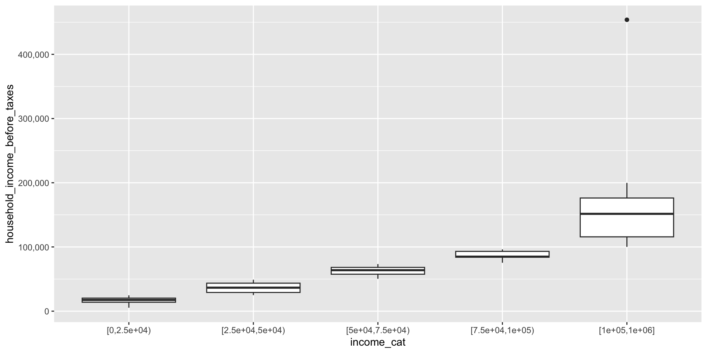
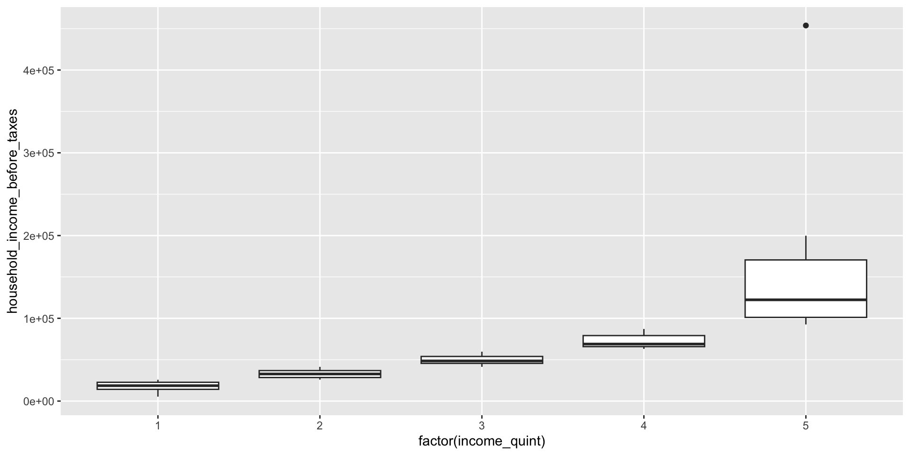

Data cleaning with messy data
ID 529: Data Management and Analytic Workflows in R
Jarvis Chen
Wednesday, January 10, 2024
Follow along
https://bit.ly/messyDataR
- Options:
- Download the
messy_data.csvfile and theid529-day3-messyData.Rscript - Or clone the repository and follow along
- Download the
Learning objectives
In this activity, we’ll look at how to accomplish some common data cleaning tasks using tools from
dplyrand thetidyverseGain familiarity with the following
janitor::clean_names()for tidying variable namescase_when()for recoding variables inmutate()across()for mutating multiple columnsDealing with duplicates, missingness, and other data messiness
cut(),quantile(), anddplyr::ntile()for creating categorical variables from continuous variablesgroup_by()andsummarize()for creating grouped summaries
Messy Data
Read our messy data
For this activity, we created a fake messy dataset with many of the data cleaning tasks that we typically need to accomplish. The data is available on our website as messy_data.csv.
What do we see?
Rows: 182
Columns: 8
$ `ID Number` <dbl> 78, 25, 10, 38, 38, 29, 13, 49, 57, 33…
$ `Race self-identified` <chr> "Black", "White", "Black", "White", "W…
$ `Hispanic ethnicity` <chr> "Non-Hispanic", "Hispanic", "Non-Hispa…
$ `Age at exam` <dbl> 42, 33, 31, -99, 32, 52, -99, 26, -99,…
$ `Self-identified gender` <chr> "cisgender male", "cisgender male", "c…
$ `Highest education completed` <chr> "College Grad", "College Grad", "8th G…
$ `Hours of sleep per night` <dbl> 3.497926, 7.273746, 6.887221, -77.0000…
$ `Household income before taxes` <dbl> 116548.65, 116148.33, 25281.35, -999.0…The column names have spaces and a mix of capital and lower case letters.
When column names have spaces, we will need to refer to them in quotes, e.g.
'ID Number'– this is very inconvenient!
First, let’s fix the variable names
In general, we would like for there not to be spaces in column names
It is a matter of style, but generally I like to keep things in lower case letters
The
janitor::clean_names()function can correct the column names for us!
[1] "ID Number" "Race self-identified"
[3] "Hispanic ethnicity" "Age at exam"
[5] "Self-identified gender" "Highest education completed"
[7] "Hours of sleep per night" "Household income before taxes"Check how many duplicates there are
Next, we can check how many duplicates there are. The id_number variable identifies subjects, and here we see that some id_number’s appear up to 5 times!
1 2 3 4 5 6 7 8 9 10 11 12 13 14 15 16 17 18 19 20
1 3 1 3 1 1 2 1 2 2 1 2 4 1 1 2 1 1 3 1
21 22 23 24 25 26 27 28 29 30 31 32 33 34 35 36 37 38 39 40
2 2 1 2 1 1 2 1 1 1 1 2 3 2 2 1 1 5 1 3
41 42 43 44 45 46 47 48 49 50 51 52 53 54 55 56 57 58 59 60
4 2 3 2 4 2 2 2 1 4 1 1 1 2 3 1 2 4 1 3
61 62 63 64 65 66 67 68 69 70 71 72 73 74 75 76 77 78 79 80
1 4 1 1 1 1 5 1 1 1 2 1 1 1 1 1 1 1 4 4
81 82 83 84 85 86 87 88 89 90 91 92 93 94 95 96 97 98 99 100
1 2 1 3 3 2 2 1 3 1 1 1 1 1 2 1 4 1 1 2
Is there a pattern to the duplicated records?
- In this particular case, it looks like the duplicated records are missing many of the variables.
What’s up with the missing codes?
cisgender female cisgender male non-binary or genderqueer
42 46 6
transgender female transgender male unknown
1 5 82
Hispanic Non-Hispanic unknown
35 65 82
8th Grade 9-11th Grade College Grad High School Some College unknown
6 17 29 11 37 82 Min. 1st Qu. Median Mean 3rd Qu. Max.
-99.0 -99.0 28.0 -22.4 40.0 70.0 Min. 1st Qu. Median Mean 3rd Qu. Max.
-77.000 -77.000 5.022 -30.882 7.245 10.083 Min. 1st Qu. Median Mean 3rd Qu. Max.
-999 -999 17988 34999 53474 453841 What’s up with the missing codes?
There appear to be various kinds of missingness coded (e.g. “unknown”,
-99,-77, and-999), but if we wantRto handle them as missing data, we should recode them toNAWe could recode each of these variables one at a time using
mutate()
# for example
df |>
mutate(hispanic_ethnicity = ifelse(hispanic_ethnicity == "unknown",
NA_character_,
hispanic_ethnicity)) |>
select(hispanic_ethnicity) |>
unique()# A tibble: 3 × 1
hispanic_ethnicity
<chr>
1 Non-Hispanic
2 <NA>
3 Hispanic - This could get a bit tedious if we have a lot of variables to recode!
Let’s recode the missing values
We can use
mutate(across())to recode these variables more efficientlyacross()allows us to apply the same function or a set of functions to multiple columns of a dataframe at once- this simplifies the code and improves readability
The basic syntax is
columnsspecifies the columns of the dataframe to apply the function to. This can be a selection of columns likec(col1, col2)Or we can specify columns using a helper like
everything(),starts_with(),ends_with(),contains()
Let’s recode the missing values
df <- df |>
mutate(across(c(hispanic_ethnicity, self_identified_gender, highest_education_completed),
~ ifelse(.x == "unknown", NA_character_, .x)),
across(c(age_at_exam, hours_of_sleep_per_night, household_income_before_taxes),
~ ifelse(.x < 0, NA_real_, .x)))
head(df)# A tibble: 6 × 8
id_number race_self_identified hispanic_ethnicity age_at_exam
<dbl> <chr> <chr> <dbl>
1 1 American Indian or Alaska Native Non-Hispanic 51
2 2 White <NA> NA
3 2 White <NA> NA
4 2 White Non-Hispanic 55
5 3 Two or more races Non-Hispanic 35
6 4 Black <NA> NA
# ℹ 4 more variables: self_identified_gender <chr>,
# highest_education_completed <chr>, hours_of_sleep_per_night <dbl>,
# household_income_before_taxes <dbl>Now we can deal with the duplicates!
We can count up how many missing variables there are for each of the multiple records and use this information to help us select the duplicated record with the most complete data (discarding the other incomplete records).
# count the number of missing columns
df$missing_count = rowSums(is.na(df), na.rm = FALSE)
# create a new dataframe with unique id's
unique_df <- df |>
# group by id_number
group_by(id_number) |>
# sort each id_number's observations by the number of missing columns (from fewest to most)
arrange(missing_count) |>
# take the first row for each id_number, which is the row with the fewest missing variables
slice(1) |>
# drop the missing_count variable
select(-missing_count) |>
# it's always a good idea to ungroup() after using a group_by
ungroup()
View(unique_df)Collapsing categories
- For some variables, we often need to collapse categories to ensure enough subjects for analysis.
Hispanic Non-Hispanic
American Indian or Alaska Native 0 4
Asian 8 8
Black 8 16
Native Hawaiian or Pacific Islander 0 4
Two or more races 1 1
White 18 32
cisgender female cisgender male non-binary or genderqueer
42 46 6
transgender female transgender male
1 5
8th Grade 9-11th Grade College Grad High School Some College
6 17 29 11 37 Collapsing categories
The
dplyr::case_when()function is a versatile tool for recoding variables. When used withdplyr::mutate, it allows you to transform a variable’s values based on a set of conditions, making it especially useful in data manipulation and cleaning.The basic syntax is:
Collapsing racial/ethnic groups
Here, we create a collapsed racial/ethnic variable called
raceththat combines information fromrace_self_identifiedandhispanic_ethnicityWe’ll combine subjects who are Non-Hispanic American Indian or Alaskan Native, Non-Hispanic Asian or Pacific Islander, and Non-Hispanic Two or more races into a category we’ll call “underrepresented racial/ethnic group”
unique_df <- unique_df |>
mutate(raceth = factor(
case_when(
race_self_identified == "White" &
hispanic_ethnicity == "Non-Hispanic" ~ "Non-Hispanic White",
race_self_identified == "Black" &
hispanic_ethnicity == "Non-Hispanic" ~ "Non-Hispanic Black",
hispanic_ethnicity == "Hispanic" ~ "Hispanic",
is.na(race_self_identified) |
is.na(hispanic_ethnicity) ~ NA_character_,
TRUE ~ "underrepresented racial/ethnic group"
),
levels = c(
"Non-Hispanic White",
"Non-Hispanic Black",
"Hispanic",
"underrepresented racial/ethnic group"
)
))Collapsing racial/ethnic groups
Collapsing gender and education
- We can similarly recode gender and education into collapsed categories
unique_df <- unique_df |>
mutate(
gender_collapsed = ifelse(
self_identified_gender %in% c(
"transgender female",
"transgender male",
"non-binary or genderqueer"
),
"trans/non-binary",
self_identified_gender
),
education_collapsed = case_when(
highest_education_completed %in% c("8th Grade", "9-11th Grade") ~ "less than hs",
highest_education_completed %in% c("High School", "Some College") ~ "hs grad",
highest_education_completed == "College Grad" ~ "college grad"
)
)- Note the use of
ifelse(test, yes, no)wheretestis a logical vector (condition to be tested),yesis a value to return iftestisTRUE, andnois a value to return iftestisFALSE
Collapsing gender and education
Categorizing continuous variables
- Now suppose that we want to create a dichotomous variable for
insufficient_sleepbased onhours_of_sleep_per_night(<7 hours per night is insufficient sleep)
Categorizing continuous variables
We can use the
cut()function to create categories from a continuous variable (here,household_income_before_taxes) by supplying a list of cutpoints (breaks)dplyrhas a functionntile()that creates approximately equal sized groups (e.g. quintiles)
Categories using cut()
Categories using ntile()
- Note that
ntile()has recodedhousehold_income_before_taxesinto categories directly, but we don’t know what the cutpoints are
Using group_by() and summarize()
- We can use
group_by()andsummarize()to get information about the range of values in each category ofincome_quint
unique_df |>
group_by(income_quint) |>
summarise(mininc = min(household_income_before_taxes, na.rm=T),
maxinc = max(household_income_before_taxes, na.rm=T))# A tibble: 5 × 3
income_quint mininc maxinc
<int> <dbl> <dbl>
1 1 5355. 25771.
2 2 25884. 41372.
3 3 41393. 59690.
4 4 63073. 87118.
5 5 92593. 453841.group_by() and summarize()
group_by()group_by()is used to split a data frame into groups based on one or more variables. This function doesn’t change the data itself but changes its metadata, setting up for grouped operations like summarizing or mutating each group separately.
summarize()summarize()– orsummarise()– is used to collapse each group created bygroup_by()into a single-row summary based on specified summary functions.While
group_by()doesn’t change the data,summarize()does
group_by() and summarize()
Some commonly used functions in
summarize()are:mean(): Calculates the mean (average) of a numeric column.sum(): Computes the sum of a numeric column.min()andmax(): Find the minimum or maximum value of a column.n(): Counts the number of observations in a group.n_distinct(): Counts the number of unique values in a column.median(): Finds the median of a numeric column.sd(): Computes the standard deviation of a numeric column.
Example: calculating proportions
- Suppose we want to calculate the proportion of subjects in each gender and racial/ethnic group who have sufficient and insufficient sleep
proportions_by_gender_raceth <- unique_df |>
group_by(gender_collapsed, raceth, insufficient_sleep) |>
summarize(count_insufficient_sleep = n(), .groups='drop') |>
group_by(gender_collapsed, raceth) |>
mutate(proportion_insufficient_sleep =
count_insufficient_sleep/sum(count_insufficient_sleep, na.rm=T)) |>
ungroup()
View(proportions_by_gender_raceth)- Note the use of
.groups='drop'in thesummarizestatement. This says to remove the grouping after summarizing (equivalent toungroup())
Example: calculating mean, median, and sd
With summarize, we can use across to create multiple summary columns
- Note that
- we supplied a list of functions for
summarizeto apply to each column specified summarizeautomatically created names for the new columns in the summary dataframe.xis explicitly used as a placeholder to refer to an element being acted upon (here, each of the columns specified in the call toacross)
- we supplied a list of functions for